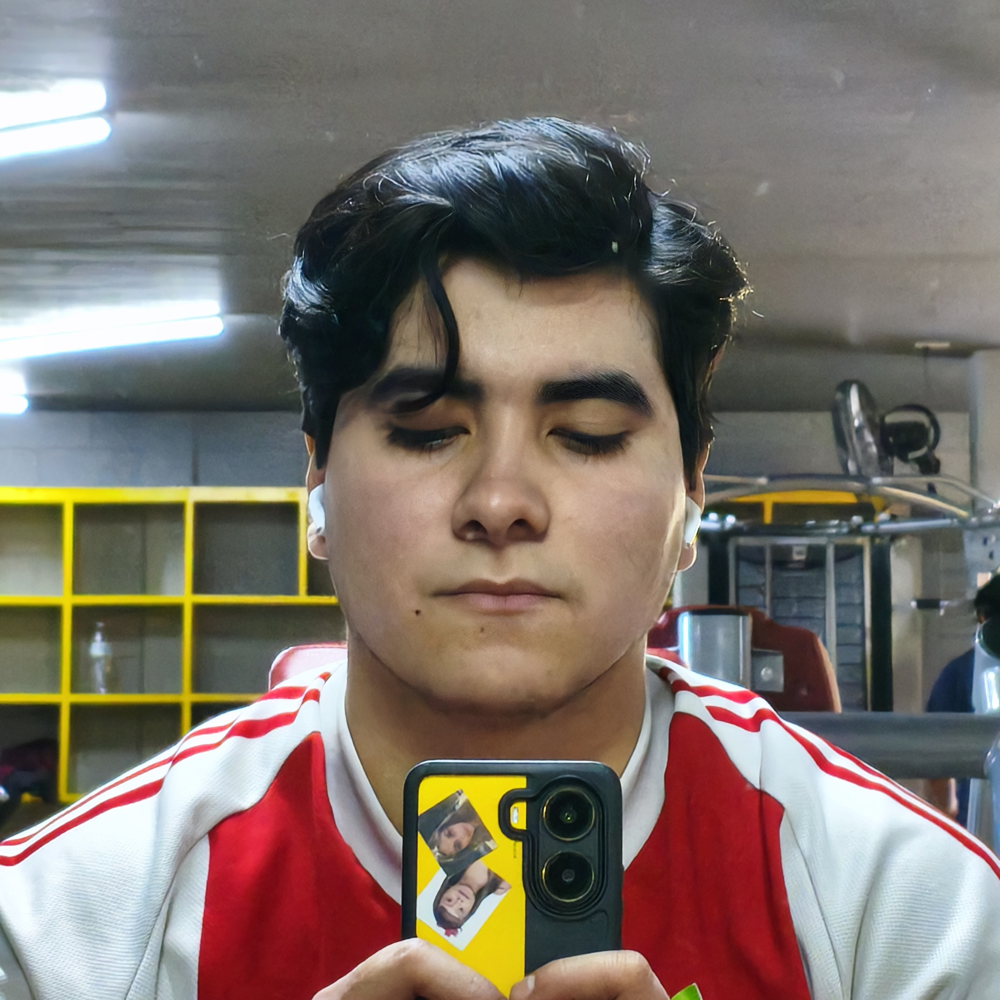

Sobre mi
Hola mi nombre es Saul Isaac Apodaca Baldenegro y soy estudiante de ingenieria en
software.
Actualmente estoy cursando mi sexto semestre. Me encuentro en búsqueda de un lugar dónde hacer
mi
servicio social que tenga que ver con cosas de mi carrera, puesto que quiero comenzar a
tener un
respaldo laboral sobre mis trabajos y participaciones.

Intereses profesionales
Me interesa lo que es el desarrollo web, la arquitectura, diseño y ciberseguridad. La verdad dedicarme a cualquiera de esas áreas me harían muy feliz. brMe encantaría comenzar a aprender de álguien en la práctica, no me refiero a que en la escuela, si no que, en trabajo o proyectos dónde haya un mid o sinior pegarme y aprender de lenguajes de programación, uso de frameworks, organización, uso del git, dintintas arquitecturas de software, trabajo en equipo bajo un entorno laboral, etc.
Objetivo como desarrollador
Mi objetivo como desarrollador es buscar hacer un cambio positivo a la sociedad, no me gustaría solo ser un desarrollador y ya
si no, provocar un cambio positivo en la sociedad, y no para que me conozcan ni mucho menos, sino para saber que al menos hice bien
a una persona con mi trabajo.